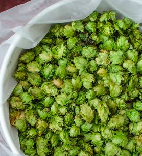
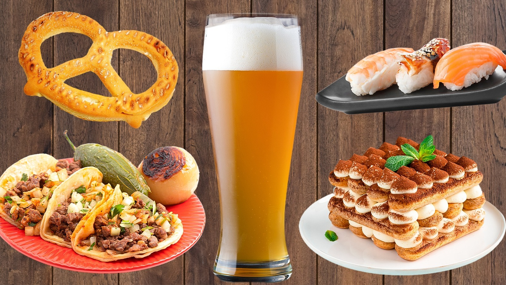
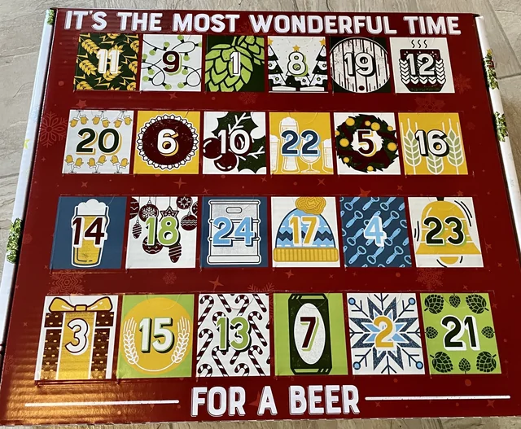

Six Articles Worth Savouring
Our most substantial long-form pieces — pour yourself a pint and settle in.
The Story Behind Our Flagship IPA: Three Years and Fourteen Batches
In 2019, Hari Kiran set out to brew the most expressive West Coast IPA in California. Three years later, after fourteen different grain bills and enough hop failures to fertilise an orchard, Batch 15 became the beer that changed everything for Mash & Ale. This is the full, unguarded account of what it takes to perfect a single recipe.
"We binned 800 litres of batch nine. It tasted like artichoke water. The team nearly mutinied."
Barrel Aging 101: How Time and Oak Transform Beer Into Something Else Entirely
There is no shortcut to a great barrel-aged beer. The science of wood, alcohol, and time is nuanced, often uncontrollable, and occasionally magical. We walk you through every stage of what happens inside a cask — from the initial fill to the final pull — including why some barrels are spectacular and others are quietly drained down the sink.
"The oak doesn't add flavour — it acts as a gateway for oxygen, and oxygen is the real flavour architect."

TastingHop Varieties Explained: A Brewer's Field Guide to the Flowers That Flavour Your Beer
From Saaz's noble spice to Citra's tropical fruit bomb, the world of hop varieties is staggeringly complex — and constantly evolving. Our brewing team profiles twelve essential varieties, explaining the oil chemistry behind each aroma, the beers they built, and how to identify them blind in a glass.
"If you can smell the difference between Mosaic and Citra, you're already thinking like a brewer."

Food & BeerThe Art of Beer and Food Pairing: Contrast, Complement, and Cut
Wine has decades of pairing tradition. Beer has centuries — it just hasn't always been written down. Our resident Cicerone Clara Kim dismantles the idea that craft beer is a casual accompaniment and argues it's the most versatile pairing ingredient at any table. A practical, opinionated guide to matching twelve beer styles with food.
"A Witbier with oysters is the best twenty seconds in all of gastronomy. I will die on this hill."
 Science
Science
Brewing Water Chemistry: The Invisible Ingredient That Makes or Breaks Every Batch
Water is 93% of your beer. Its mineral content shapes perceived bitterness, mouthfeel, hop aroma, and malt character in ways that yeast and grain simply cannot override. Hari Kiran profiles the water chemistry of five great brewing cities, explains sulfate-to-chloride ratios, and shows why we treat every Mash & Ale batch differently depending on the target style.
"Burton water built the IPA. Pilsen water built the lager. The water didn't follow the beer — the beer followed the water."

NewsOur 2025 Beer Calendar: Every Planned Release from January to December
For the first time, we're publishing our full annual release schedule — twelve months, fourteen planned beers, and one wildcard batch that we're brewing entirely with foraged local ingredients. Editor Maya Hall interviews each brewer about their upcoming release, what inspired it, and what drinkers should expect when the taps open.
"The foraged saison might be the strangest thing we've ever attempted. It might also be the best."